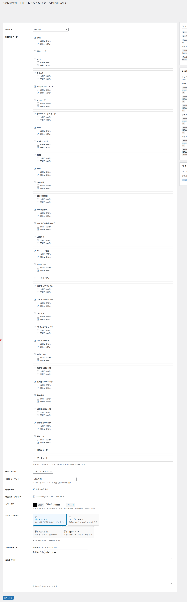
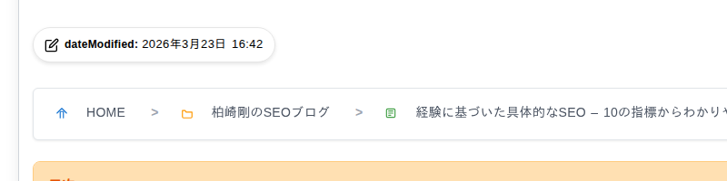

詳細設定
設定画面の各項目、出力される HTML、構造化データ (JSON-LD)、ショートコードと PHP 関数など、Kashiwazaki SEO Published & Last Updated Dates の詳細を解説します。
設定画面の項目
管理画面の左メニュー「Kashiwazaki SEO Published & Last Updated Dates」から開く設定画面には、次の項目があります。

| 設定項目 | 説明 |
|---|---|
| 表示位置 | 記事の前 / 記事の後 / 記事の前後両方 / 自動表示しない（ショートコードのみ）から選びます。 |
| 対象投稿タイプ | 日付を表示する投稿タイプにチェックを入れます。チェックした投稿タイプごとに「公開日を表示」「更新日を表示」を選べます。両方を外すと、その投稿タイプでは日付を表示しません（構造化データと Last-Modified ヘッダーは出力されます）。 |
| 表示スタイル | アイコン + テキスト / アイコンのみ / テキストのみ から選びます。 |
| 日付フォーマット | PHP の日付フォーマットで指定します（既定は Y年n月j日）。WordPress の「設定 > 一般」の日付形式ではなく、ここで指定した形式が使われます。 |
| 時間を表示 | チェックすると日付の後ろに時刻（H:i）を付けます。 |
| 構造化マークアップ | チェックすると JSON-LD を出力します（下の「構造化データ (JSON-LD)」参照）。 |
| カラー設定（日付の色） | アイコン・ラベル・日付の色を 1 色で指定します。公開日と更新日を両方表示するときは、公開日が薄く表示されます。 |
| デザインパターン | バッジスタイル / シンプルテキスト / ボックススタイル / ライン付きスタイル の 4 種類から選びます。 |
| ラベルテキスト | 公開日・更新日の前に付ける文字（既定は「公開日」「更新日」）。表示スタイルが「アイコンのみ」のときは使われないため、行が隠れます。 |
| 更新日の表示条件 | 「公開直後の場合は更新日を表示しない」にチェックすると、公開から 24 時間以内の更新は更新日として表示しません。対象投稿タイプのどれかで「更新日を表示」にチェックしているときだけ、この行が表示されます。 |
| カスタムCSS | サイト全体の <head> に追加するスタイルです。HTML タグは取り除かれます（子セレクタ > や引用符はそのまま使えます）。 |
どの日付が表示されるか
| 投稿タイプの設定 | 表示 |
|---|---|
| 公開日を表示・更新日を表示 | 公開日を表示します。実際に更新されていれば更新日も表示します（「公開直後の場合は更新日を表示しない」がオンなら、公開から 24 時間以内の更新は表示しません）。 |
| 公開日を表示のみ | 公開日だけを表示します。 |
| 更新日を表示のみ | 更新日を表示します。更新日が表示条件で隠れるとき（未更新・公開直後の更新）も、日付を 1 つ表示します。その値は実際の最終更新日時（未更新の投稿では公開日時と同じ）です。 |
| 両方とも外す | 日付を表示しません。 |
フロントエンド表示例

出力される HTML
記事本文の前後に、次のような HTML を挿入します。日付は <published-date> / <updated-date> というカスタム要素で囲まれ、datetime 属性にサイトのタイムゾーン付きの ISO 8601 形式の日時が入ります。
<div class="ksplud-dates-wrapper ksplud-pattern-badge ksplud-both-dates">
<div class="ksplud-date ksplud-date-updated">
<span class="ksplud-icon">(アイコン)</span>
<span class="ksplud-label">更新日:</span>
<updated-date datetime="2024-06-20T15:45:00+09:00">2024年6月20日</updated-date>
</div>
<div class="ksplud-date ksplud-date-published">
<span class="ksplud-icon">(アイコン)</span>
<span class="ksplud-label">公開日:</span>
<published-date datetime="2024-01-15T10:30:00+09:00">2024年1月15日</published-date>
</div>
</div>見た目はプラグインの CSS（public/css/public-style.css）と、設定画面の色・デザインパターンで決まります。テーマの CSS が優先される場合は「カスタムCSS」で調整してください。
上の HTML はサーバーが出力する形（ページのソース）です。ブラウザでは、プラグインの JavaScript（public/js/custom-elements.js）がページの読み込みの約 0.1 秒後に <published-date> / <updated-date> を <span class="ksplud-published-date-fallback"> / <span class="ksplud-updated-date-fallback"> に置き換えます。日時は datetime 属性から data-datetime 属性に移ります。
開発者ツールで見える要素はこの span です。「カスタムCSS」で日付の文字にスタイルを当てるときは、published-date, updated-date, .ksplud-published-date-fallback, .ksplud-updated-date-fallback の両方を指定してください（プラグインの色の指定も両方に当てています）。
構造化データ (JSON-LD)
「構造化マークアップ」をオンにすると、対象投稿タイプの個別ページの <head> に次の JSON-LD を出力します。日付の表示設定（公開日・更新日の表示の有無）とは独立して出力されます。
{
"@context": "https://schema.org",
"@graph": [
{
"@type": "DigitalDocument",
"@id": "https://example.com/post-url/#doc",
"url": "https://example.com/post-url/",
"datePublished": "2024-01-15T10:30:00+09:00",
"dateModified": "2024-06-20T15:45:00+09:00"
},
{
"@type": "CreateAction",
"@id": "https://example.com/post-url/#create",
"startTime": "2024-01-15T10:30:00+09:00",
"object": { "@id": "https://example.com/post-url/#doc" }
},
{
"@type": "UpdateAction",
"@id": "https://example.com/post-url/#update",
"startTime": "2024-06-20T15:45:00+09:00",
"object": { "@id": "https://example.com/post-url/#doc" }
}
]
}| スキーマ | 役割 |
|---|---|
| DigitalDocument | ページの URL・公開日 (datePublished)・最終更新日 (dateModified) |
| CreateAction | 公開の出来事（startTime = 公開日時）。object で DigitalDocument を指します |
| UpdateAction | 更新の出来事（startTime = 最終更新日時）。最終更新日時が公開日時と違うときだけ出力します |
テーマや他の SEO プラグインが出力する Article・BlogPosting・WebPage とは別の型（DigitalDocument）を使うため、既存の構造化データと競合しません。出力は Schema.org Validator やリッチリザルトテストで確認できます。
Last-Modified ヘッダー
対象投稿タイプの個別ページでは、HTTP レスポンスに Last-Modified ヘッダー（投稿の最終更新日時、GMT）を付けます。
ショートコード
| ショートコード | 説明・属性 |
|---|---|
[published_date] |
公開日を表示します。属性: format（日付形式）、icon（true / false）、label（ラベルの文字）、class（追加の CSS クラス） |
[updated_date] |
更新日を表示します。属性は [published_date] と同じものに加えて hide_if_not_modified（true / false。省略すると設定画面の「公開直後の場合は更新日を表示しない」に従う） |
[publish_update_dates] |
更新日と公開日を並べて表示します。属性: separator（区切りの文字）、wrapper_class（全体を囲む要素の CSS クラス） |
PHP 関数
<?php KSPLUD_Display::display_both_dates(); ?> // 設定どおりの日付表示 (HTML)
<?php KSPLUD_Display::display_published_date(); ?> // 公開日 (HTML)
<?php KSPLUD_Display::display_updated_date(); ?> // 更新日 (HTML)
<?php echo KSPLUD_Display::get_published_date(null, 'Y/m/d'); ?> // 公開日の文字だけ
<?php echo KSPLUD_Display::get_updated_date(null, 'Y/m/d'); ?> // 更新日の文字だけいずれも第 1 引数に投稿 ID を渡せます（省略時は現在の投稿）。display_* は第 2 引数に false を渡すと出力せずに HTML を返します。